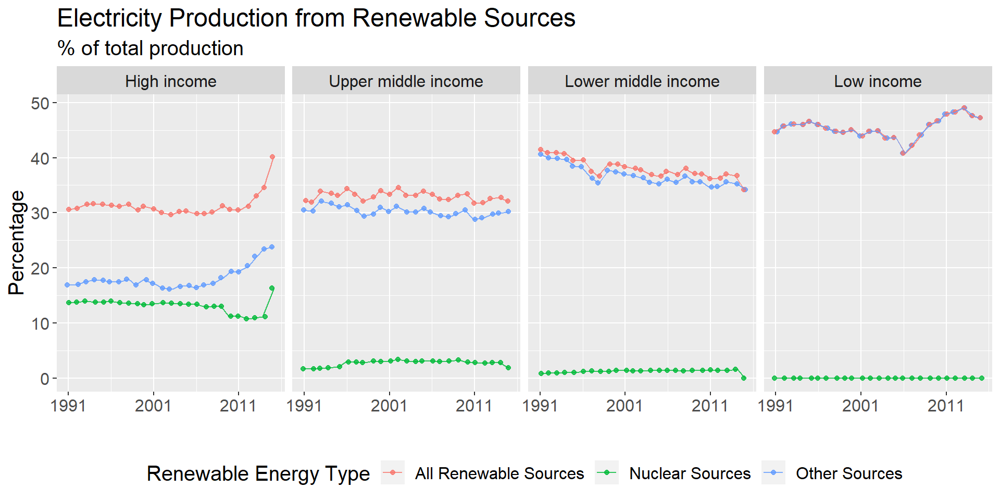

Chapter 5 Results
5.1 Does the increase of education attainment and better overall economic condition increase overall well-being of a country?
Originally, we were going to investigate whether better education attainment and economic condition can decrease income inequality. However, indicators for income distribution, such as Income share held by lowest 20%, Income share held by highest 20%, have a lot of missing values. It seems that only about 30 countries are collecting data for this indicator, making it impossible for us to infer on the general trend worldwide. Therefore, we turn to Life expectancy at birth, total as a substitute since it can reflect the overall well-being of a country.
We would first like to investigate the relationship between education attainment and life-expectancy. However, most of the indicators for education attiment have a high percentage of missing values for most countries, again making it difficult for us to infer a general trend. The indicator Primary completion rate, total (% of relevant age group) seems to be the most viable one for analysis of general trend and we further investigate how its missing values are distributed here.
We can observe that the number of missing values dropped sharply for all conturies after 1998, which might be attributed to the attention education attainment received in recent years. As a result, we decide to limit our analysis for question to the time period betwen 1999 and 2017. In addition, the rate of values are similar for all four income groups, so dropping countries without any data for this indicator will not lead to a biased distribution between income groups.
To investigate on the relationship between education and life expectancy, we first draw a plot between them at year 2010.

From the plot, we can see a strong positive correlation between primary completion rate and the life expectancy. Here we need to note that the primary completion rate can be more than 100 since it is the fraction of students enrolled in the last year divided by the students enrolled in the first year. As a result, reapeating students and transfer students will lead to a higher completion rate than expected. Although we can not conclude that higher primary complete rate directly leads to higher life expectancy, we can conclude that they are highly correlated and are both indicators of the overall well-being of a country.
After that, we would like to see how primary complete rate and life expectancy have changed over time.

From the plot we can see that higher income groups have much higher primary completion rate and life expectancy. High income and upper middle income countries maintains near 100% primary completion rate our window of study, while primary complete rate in lower middle and low income countries grow rapidly thanks to the increasing focus of fundamental education in these areas.
5.2 Is there a co-relation between CO2 emissions and financial indicators, quality of life, etc?
We first examine the emission of greenhouse gases per capita for each income group. We choose the year 2000 to draw a boxplot showing the overall distribution.

From the plot, we can see the evidence that countries with higher income emit more co2 per person. Most of the low-income countries emit almost negligible co2 compared to high-income countries. However, this might be due to the fact that the production of high-value product requires more energy and low-income countries tend to have bigger population. Therefore, we also plot the relationship between greenhouse emission per 2015 US$ and income groups.

This plot gives us some different insight than the former. The plot shows that high and low income countries emit relatively fewer co2 to generate a unit of GDP compared to upper middle and lower middle income countries. The reason may comes from the fact that high-income countries have a wholesome system of service sector that can make a lot of profit with relatively low pollution while the low-income countries focus on fundamental livings which also emit few co2. In contrast, middle-income countries may focus on industrial section, which will emit high amount of co2 for each unit of GDP.
At last, we would like see the annually varying situation of the two above-mentioned metrics.

We can see that the trend is close to what is shown in the boxplot of CO2 emission per capita, which increases with the increase of income group. We can also observe that the emission per capita in high-income countries drops in the recent years, which may credits to the development of service section and the arise of environment-protect activities. On the other hand, the emission in upper-middle-income countries bursts after 2000, because of the rapid industrialization in these countries. Also, we can observe that the emission of lower-middle-income countries and low-income countries have a cross at about 1990, while the record of upper middle income countries drop sharply at the same time, because the additional data brought by the disassembly of Soviet Union.
Similarly, we want to discover how CO2 emission per 2015 US$ has changed over time.

From the plot, we can reaffirm our previous observation that middle income countries emits more CO2 to produce a unit of GDP while high-income and low-income emits less. We also see a sharp spike at about 1990 in upper-middle and lower-middle-income countries, which is also due to the dissolution of the Soviet Union. In addition, except for the low-income countries, the world shows a steady drop of CO2 emission per dollar after 1990, owing to the fact that the development of technology can reduce the CO2 emission per product.
5.3 Does richer countries use more renewable sources for electricity production and does this indeed reduce the emission of CO2?
We first investigate whether countries with higher income generate more electricity using renewable sources. Here, we define both nuclear sources and all other sources, which includes hydroelectric, solar, wind etc. as renewable sources for electricity production. The indicator we use are the percentage of electricity produced from nuclear sources and percentage of electricity produced from other sources. We then sum them to get the total percentage of electricity produced from renewable sources. We then aggregate them to yearly income group level by taking the mean. Moreover, we limit this analysis to the period between 1990 and 2016, since the indicator contains mostly missing values outside of this date range.
We can draw several interesting conclusion from the plot below. Firstly,low income countries have the highest percentage of electricity produced from renewable sources. However, these indicators contains high counts of missing values for low income countries, so this observation might not be robust. Secondly, percentage of electricity produced from renewable sources remains mostly constant for upper middle income countries and exhibit a downward trend for lower middle income countries, while this percentage has been rapidly increasing for high income and low income countries since around 2006. This could be due to increasing awareness of the importance of renewable energy since this period. Third, only rich countries can afford to use nuclear energy as a source of electricity, while this source electricity remains below 5% of total electricity production during this time period for all other countries.

To investigate the relationship between use of renewable electricity source and CO2 emission, we first investigate the co-movement between these indicators. Since CO2 emission indicators are respectively in kg and tons, we scale CO2 emission indicators using min max scaling w.r.t each income group so that all indicators in the plot are on similar scales to help with our visualization. For high income countries and low income countries, increase in use of renewable electricity corresponds to a decrease in both indicators for CO2 emission. However, CO2 emissions per capita increase while CO2 per dollar decreased for upper and lower middle income countries, which suggests that other factors, such as productivity increase and/or consumption increase also affects CO2 emissions.
We investigate this issue further by visualizing the data at the more granular country level. We created a scatter plot and fit a least square line between renewable electricity percentage and both CO2 emission per capita and CO2 emission per dollar for all income groups. We choose to log CO2 emissions indicators to again account for scale differences. For income groups, there exists a strong negative relationship between renewable electricity percentage and CO2 emission, although the large spread around the least square line indicates that there are other potential explanatory variables for CO2 emission.